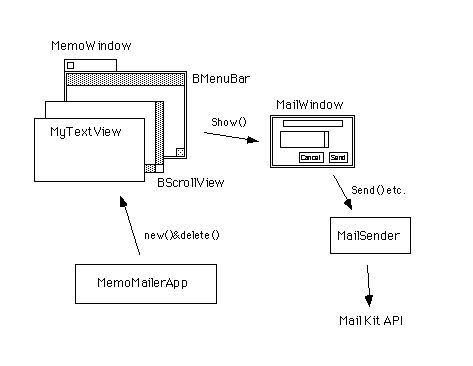

第11章 メールを送ろう
これが最後の章です。本書では、主に一般的なアプリケーションを作るために必要なAPIについて解説してきました。中心となるApplication Kit、そしてInterface KitとSupport Kit。それから、ファイルにアクセスしてデータの保存や読み出しを行うのに使うStorage Kit。また、スレッドの生成と実行制御など、マイクロカーネルの機能を直接呼び出すためのKernel Kit。5章から10章まで、六つの章を使って解説を行いました。これまでの説明を読んで、章末の練習問題の答えも大体分かった人は、もうBeOSプログラミングの上級者です。お願いですから僕にコーチして下さい。
・・・でも、まだ扱っていないAPIはたくさん残ってます。Kitごとに見てみても、Translation KitにNetwork Kit、それからMail Kit。Game KitとMedia Kitは楽しそうですね。OpenGLを使った3Dプログラミングも、本書では扱っていません。さらに、BeOSのためのデバイスドライバ開発なんてのもあるんです。何てこったい!
やれやれ。この章では、残っているAPIの中からMail KitとNetwork Kitをとりあげることにしました。それほど使い方の難しいKitではありませんし、サンプルアプリケーションも簡単なもので済んだからです。「どんなサンプルを使ってるんだ。」ですって?それは、本文の解説を読んでみて下さい。では、最後の章を始めます。
この章では、ネットワーク機能を利用したプログラミングの例として、メールの送信を行うアプリケーションのサンプルを示します。つまり、主な題材として以下のものをとりあげます。
◇ソケットAPIを使ってメールを送る
◇BeOSのMail Kitを利用してメールを送る
◇ファイルを添付してメールを送る
BeOSのAPIが提供しているクラスのうち、以上の題材をプログラミングするために利用するのは、実は一つしかありません。
●BMailMessage(Mail Kit)
したがって、クラス階層図は示しません。ただし、BMailMessageクラスの他に、C言語の手続きとして提供されているAPIを利用します。
プログラミングの説明に使うサンプルアプリケーションは、前の章で作ったテキストエディタ(MemoApp)を改造したものです。改造点はごく小さなものですので、本章ではサンプルアプリケーションの構造について詳しく説明することはしません。このサンプルは、インターネットのメール送信プロトコル(SMTP)を使ってメールサーバと通信するバージョンと、BeOSのmail_daemonに送信を代行してもらうバージョンの二つがあります。両者を比べれば、BeOSのMail Kitを利用するとメールの送信処理が非常に簡単になることが分かるでしょう。
11.1 ソケットだったら知ってるよ
2.6節で述べたように、BeOSのNetwork KitではBSDソケット準拠のAPIを提供しています。ソケットについては、Unix系OSに限らずWindowsでも広く使われているAPIですから、知っている人も多いでしょう。ごく簡単にいうと、ソケットというのはネットワーク通信を行う場合に、データの入力や出力を行うインタフェースとなる口です。たとえば、メール送信を行うSMTPサーバと通信する場合は、以下の手順でソケットを作成してサーバと接続し、データを送ります。1.)ソケットを作成する。作成にはsocket()関数を使う。
2.)サーバのアドレス情報を作成する。アドレス情報には、SMTPサーバのIPアドレスとSMTPのポート番号をセットする。
3.)サーバと接続する。socket()が戻り値として返した「ソケットディスクリプタ」とサーバのアドレス情報を引数として、connect()を呼び出す。
このようにしてサーバと接続したら、あとはソケットディスクリプタを引数としてデータの入出力手続きを呼び出し、サーバとの通信処理を実行します。ただし、ソケットに関してはBSD版との間に仕様の違う点があります。その違いを以下に示します。
■BeOSでは、ソケットディスクリプタとファイルディスクリプタは違う
BSDソケットでは、socket()関数が返すソケットディスクリプタとは、ファイルディスクリプタと同じものです。したがって、いったんソケットを作ってサーバと接続してしまえば、後はファイルと同じように入出力操作を行うことが可能です。
■BeOSでは、ソケットに対する入出力はrecv()とsend()で行う
BSDソケットでは、OS内部の働きにより、ソケットを使ったネットワーク通信とファイルに対する入出力とを同じ操作で行えます。つまり、ネットワークによるデータの受信と送信を行うのに、ファイルに対する入出力と同じ手続き、すなわちread()とwrite()を使うことができます。しかし、BeOSではソケットとファイルはOSによって区別されており、ソケットに対してread()とwrite()を使うことはできません。このため、ソケット専用に用意された、“recv()”と“sedn()”という手続きを使って受信と送信を行います。
■BeOSでは、ソケットの接続解除と解放をclosesocket()で行う
BSDソケットでは、OSの働きによってソケットとファイルが共通化されています。したがって、通信相手との接続を解除してソケットを解放するのは、ファイルを閉じるのと同じclose()で行います。一方、BeOSでは両者が区別されていますので、ソケット専用に用意されれた“closesocket()”を使う必要があります。
この違いにさえ気をつければ、あとはUnix系OSの場合と同じようにして、ソケットを使った通信処理をプログラミングできます。図11.1に、第10章の“MemoApp”を改造してメール送信機能を追加した、“MemoMailer”というサンプルのスクリーンショットを示します。

図[10.1] MemoMailerのスクリーンショット
“MemoMailer”は、テキスト編集ウィンドウに入力したテキストを、指定した宛先にメール送信する機能を持っています(注11-1)。このサンプルのソースコードは紙面への掲載を省略しますが、付録のサンプルコード集には収録していますので、興味がある人は読んでみて下さい。ソケットディスクリプタに関する違いを除けば、Unix系OSの場合と同じようなプログラミングであるのが分かるでしょう。
- (注)11-1
- “MemoMailer”アプリケーションは、ごく基本的なメール送信機能しか持たないサンプルです。SMTPプロトコルのうち必須部分しか実装していませんし、また多バイト文字を送信するのに必要な、変換処理も行っていません。ですから、BeOSのソケットAPIを使ったサンプルとして見るだけにして下さい。
11.2Mail Kitはとっても便利
次に、BeOSのMail Kitを使ってメール送信を行うサンプルを示します。このサンプルは、図10.1に示した“MemoMailer”の改良版です。最初のバージョンではテキストを送るだけでしたが、改良版ではファイルを添付してメールを送信できるように機能追加しています。図10.2が、改良版のスクリーンショットです。

図[10.2] Mail Kitを使って実装したMemoMailerのスクリーンショット
11.2.1 Mail Kitの使い方
MemoMailerについて説明する前に、それが利用しているMail Kitについて説明しておきます。Mail Kitでは、以下のAPIが提供されています。■BMailMessage
メールの送信処理に使うクラスです。送信メールを表わしたもので、非常にシンプルなものです。メールの送信先アドレスやサブジェクトなど、ヘッダ情報をセットするAddHeaderField()メソッドと、メール本文をセットするAddContent()メソッド、それから添付ファイルや添付データをセットするAddEnclosure()メソッドを持っており、これらを呼び出して送信メールを作ります。送信メールができあがったら、Send()メソッドを呼び出して送信します。
■mail_daemonを呼び出す手続き
2.3節で述べたように、インターネットメールサーバと接続してメールの送受信を行うサーバモジュールです。BMailMessageクラスのSend()メソッドは、内部でmail_daemonを呼び出してメールの送信処理を依頼するものです。Mail Kitでは、mail_daemonを呼び出すための手続きも提供されています。提供されているのは、メール受信用のPOPアカウント情報とメール送信用のSMTPサーバ情報に対するアクセスを行う手続き、およびインターネットメールサーバと接続し、メールの送受信を実行させる手続きです。また、添付書類データの変換などに利用する、base-64方式の符号化および複合化手続きも提供されています。
BMailMessageクラスを使えば、最初のバージョンのMemoMailerで行ったようなSMTPサーバとの通信処理を行わずに済ます。つまり、以下のような簡単な手順でメールを送信できるのです。
1.)BMailMessageクラスのインスタンスを生成する。
2.)メールのヘッダに付けるそれぞれのフィールドごとに、AddHeaerField()メソッドを呼び出して内容をセットする。
3.)AddContent()メソッドを呼び出して、メールの本文をセットする。
4.)添付書類を付ける場合には、AddEnclosure()メソッドを呼び出してセットする。
5.)BMailMessageオブジェクトに送信メールの内容を全てセットしたら、Send()メソッドを呼び出して送信する。
では、実際のプログラミングを見るためにサンプルアプリケーションの説明へ進みましょう。
11.2.2MemoMailerのモジュール構成とソースコード
まず、サンプルアプリケーション(MemoMailer)のモジュール構成を説明します。図11.3が、MemoMailerのモジュール構成です。

図[11.3] MemoMailerのモジュール構成
図に示したクラスのうち、MemoMailerで中心的な役割を果たすのがMailWindowとMailSenderクラスです。以下に、この二つについて述べます。
■MailWindow
送信メール情報を入力するためのウィンドウクラスです。MemoMailerのウィンドウで“Mail”メニューから“Send...”を選択すると、このウィンドウが開かれます。このウィンドウで送信先アドレスと添付書類をセットし、“Send”ボタンをクリックすれば、次に述べるMailSenderクラスの働きによってメールの送信処理が行われます。
■MailSender
メールの送信処理を行うクラスです。内部にBMailMessageオブジェクトを持ち、そのメソッドを呼び出して実際の処理を行うだけのクラスです。11.1節でしたMemoMailerの最初のバージョンでは、このクラスはBMailMessageの代わりに“MySMTPClient”というクラスを使っています。内部の実装が変わっても、このクラスを使う側から見ると違いがないようにするために設けた、いわゆるラッパー(wrapper)クラスです。
リスト11.1と11.2に、MailSenderクラスのソースを示します。
[リスト11.1] MailSender.h
#ifndef _MAIL_SENDER_H_
#define _MAIL_SENDER_H_
#include <app/Invoker.h>
/* 関連クラス・構造体 */
class BMailMessage;
/*
* MailSenderクラスの定義
*/
class MailSender : public BInvoker {
// メソッド
public:
// 初期化と解放
MailSender(BMessage* message, BHandler* handler);
~MailSender(void);
void Init(void);
// メール送信
void SetHeader(const char* inToAddr,
const char* /* inFromAddr */, const char* inSubject);
void SetContent(const char* inBodyText);
void AddEnclosure(const entry_ref& inRef);
void Send(void);
// 送信動作の制御
bool IsSending(void);
bool Cancel(void);
private:
static int32 ExecSend(void* data);
static bool CheckMailDaemon(void);
// データメンバ
private:
BMailMessage* fMailObj; /* メールオブジェクト */
thread_id fThread; /* 送信スレッド */
};
#endif /* _MAIL_SENDER_H_ */
[リスト11.2] MailSender.cp
#include "MailSender.h"
#include "KGUtility/kgAlert.h"
#include "KGUtility/kgDebug.h"
#include <mail/E-mail.h>
/* 文字列定数 */
const char kSendingNowMsg[] = "Do you abort the session?";
const char kNoDaemonMsg[] = "mail_daemon is not running.\n"
"Would you like to launch it?";
const char kMailDaemonSig[] = "application/x-vnd.Be-POST";
/*
* MailSenderクラスの非公開メソッド
*/
int32
MailSender::ExecSend (void* data)
{
status_t sts;
MailSender* theObj = (MailSender*)data;
/* mail_daemonが動いているかチェック */
if (! CheckMailDaemon()) {
theObj->fThread = -1;
return B_OK; /* 起動できない */
}
/* メールの送信を実行 */
sts = theObj->fMailObj->Send(true, false); /* すぐに送信 */
if (sts != B_OK)
goto err;
/* 完了通知 */
theObj->Invoke();
theObj->fThread = -1; /* 自身の終了を記録 */
return B_OK;
err:
::Error("MailSender::ExecSend", sts);
theObj->fThread = -1; /* 自身の終了を記録 */
return sts;
}
bool
MailSender::CheckMailDaemon (void)
{
bool isRunning = false;
status_t sts;
app_info theAppInfo;
/* mail_daemonの動作状態を取得 */
sts = be_roster->GetAppInfo(kMailDaemonSig, &theAppInfo);
if (sts == B_OK)
isRunning = true;
/* 動いていなければユーザに確認して起動 */
if (!isRunning && ::KGConfirm(kNoDaemonMsg)) {
sts = be_roster->Launch(kMailDaemonSig);
if (sts != B_OK)
goto err;
isRunning = true;
}
return isRunning;
err:
::Error("MailSender::CheckMailDaemon", sts);
return false;
}
/* MailSenderクラスの公開メソッド */
/*
* 初期化と解放; MailSender
*/
MailSender::MailSender (BMessage* message, BHandler* handler)
: BInvoker(message, handler)
{
fMailObj = NULL;
fThread = -1;
this->Init();
}
MailSender::~MailSender (void)
{
/* スレッドが生きていたら強制終了 */
if (fThread != -1)
(void)::kill_thread(fThread);
delete fMailObj;
}
void
MailSender::Init (void)
{
ASSERT(! this->IsSending());
/* メールオブジェクトを生成し直す */
delete fMailObj;
fMailObj = new BMailMessage();
return;
}
/*
* メール送信; MailSender
*/
void
MailSender::SetHeader (const char* inToAddr,
const char* /* inFromAddr */, const char* inSubject)
{
ASSERT(inToAddr != NULL);
ASSERT(inSubject != NULL);
ASSERT(! this->IsSending());
status_t sts;
/* Toアドレスをセット*/
sts = fMailObj->AddHeaderField(B_MAIL_TO, inToAddr);
if (sts != B_OK)
goto err;
/* Subjectをセット */
sts = fMailObj->AddHeaderField(B_MAIL_SUBJECT, inSubject);
if (sts != B_OK)
goto err;
return;
err:
::Error("MailSender::SetHeader", sts);
return;
}
void
MailSender::SetContent (const char* inBodyText)
{
ASSERT(inBodyText != NULL);
ASSERT(! this->IsSending());
status_t sts;
/* メール本文をセット */
sts = fMailObj->AddContent(inBodyText, strlen(inBodyText));
if (sts != B_OK)
goto err;
return;
err:
::Error("MailSender::SetContent", sts);
return;
}
void
MailSender::AddEnclosure (const entry_ref& inRef)
{
ASSERT(! this->IsSending());
status_t sts;
entry_ref copiedRef = inRef;
/* 添付書類をセット */
sts = fMailObj->AddEnclosure(&copiedRef);
if (sts != B_OK)
goto err;
return;
err:
::Error("MailSender::AddEnclosure", sts);
return;
}
void
MailSender::Send (void)
{
ASSERT(! this->IsSending());
status_t sts;
/* 送信処理用のスレッドを生成して起動 */
fThread = ::spawn_thread(
ExecSend, "sender", B_LOW_PRIORITY, this
);
sts = ::resume_thread(fThread);
if (sts != B_OK)
goto err;
return;
err:
::Error("MailSender::Send", sts);
return;
}
/*
* 送信動作の制御; MailSender
*/
bool
MailSender::IsSending (void)
{
return (fThread != -1);
}
bool
MailSender::Cancel (void)
{
bool isCanceled = true;
/* 送信中なら、ユーザに確認してスレッドを強制終了 */
if (this->IsSending()) {
if (! ::KGConfirm(kSendingNowMsg))
isCanceled = false;
else {
(void)::kill_thread(fThread);
fThread = -1;
}
}
return isCanceled;
/*
* 注意:ここではkill_thread()を使って強制終了しているが、本当はそうす
* べきではない。Mail Kitの呼び出しを強制終了することによって、
* mail_daemonや、さらにはnet_serverをクラッシュさせてしまう可能性
* すらあるからである。('98. 5/16, koga@ftgun.co.jp)
*/
}
MailSenderで行っている処理は簡単なものですから、ソースコードの内容については特に説明しません。また、残りのクラスのソースも付録のサンプルコード集に収録していますので、興味がある人は取り出して読んでみて下さい。
11.3 まとめと練習問題
この章では、最最初の挙げた題材をプログラミングするために、次のような解決手段を用いました:■ソケットAPIを使ってメールを送る
→SMTPサーバと接続し、RFCに記載されたプロトコルに従って通信する。
■BeOSのMail Kitを利用してメールを送る
→BMailMessageクラスのインスタンスを生成し、AddHeaderField()メソッドでメールのヘッダ情報をセットする。それからAddContent()メソッドで本文をセットし、Send()メソッドを呼び出して送信する。
■ファイルを添付してメールを送る
→BMailMessageクラスのAddEnclosure()メソッドに、添付ファイルのエントリ情報を渡す。
なお、この章には練習問題を用意していません。少しばかり退屈で長かったこの本の説明も、これでようやく終わりです。これからは、あなたは自分自身の素敵なアプリケーションを作りあげていって下さい。その時に、この本が少しでも役に立てればよいと願っています。読んでしまったからといって捨てたりしないで下さいね。捨てるよりは、この本を友達にあげて下さい。もちろん、できるだけ仲の良い友達をお願いします!
Art of BeOS Programming
koga@stprec.co.jp